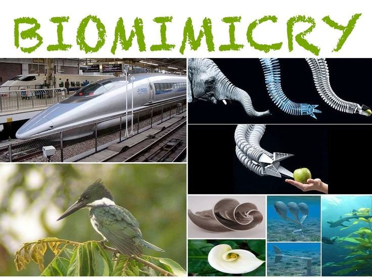
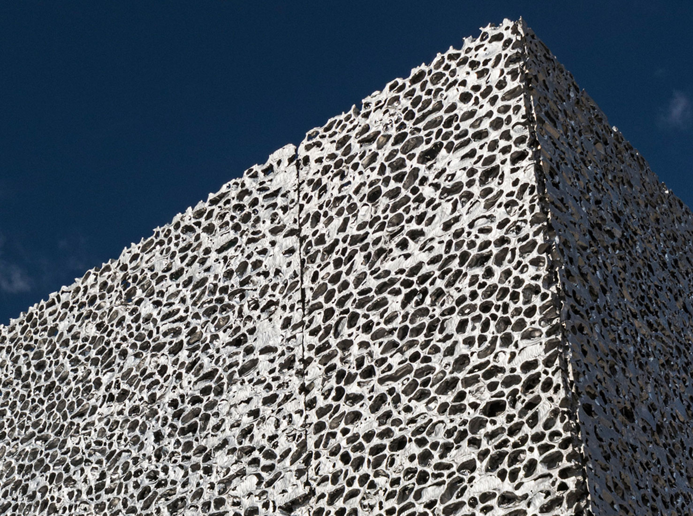
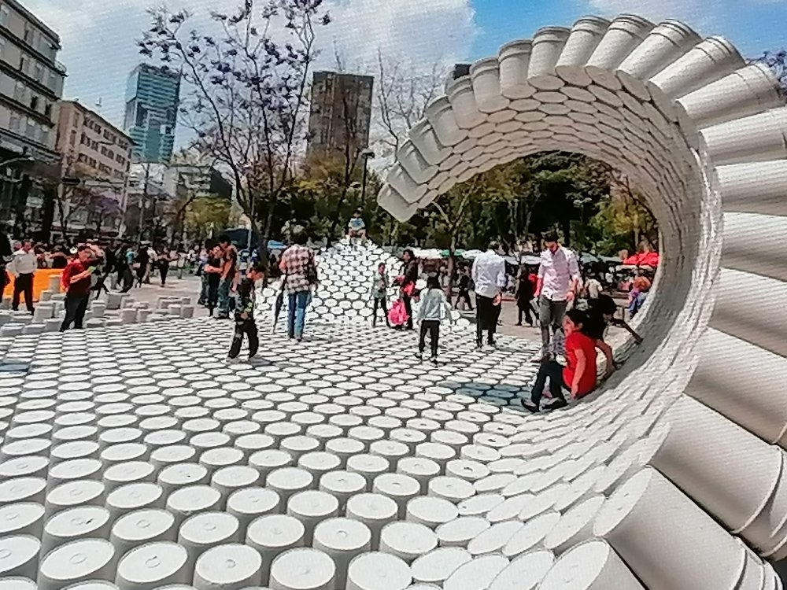
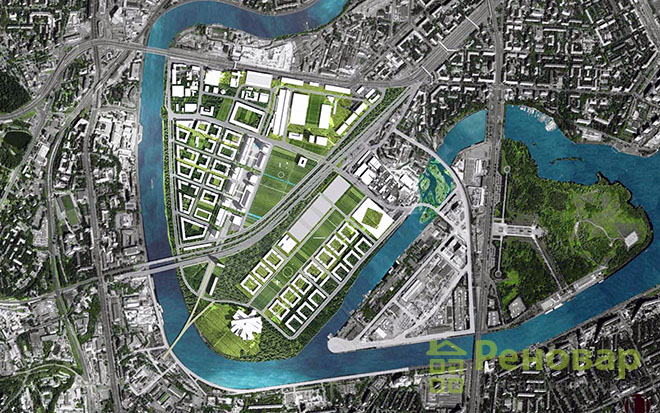

Влияние биомимикрии в современном дизайне
Как природные формы вдохновляют архитектуру будущего.

Как природные формы вдохновляют архитектуру будущего.

Обзор экологичных технологий для коммерческой недвижимости.

Анализ ключевых направлений в урбанистике.

Превращение заводов в арт-пространства и жилые кварталы.
Биомимикрия — это подход, при котором архитекторы заимствуют эффективные формы, структуры и процессы у природы. Например, термитники вдохновляют системы естественной вентиляции, а паутина — лёгкие и прочные конструкции. Vertex Architects активно использует эти принципы, создавая здания, которые живут в гармонии с окружающей средой.
В этой статье мы расскажем о знаковых проектах, где природа стала главным архитектором.
Назад к спискуДревесина, переработанный бетон, биопластик — это не просто тренды, а необходимость. Мы рассматриваем, как выбор материалов влияет на углеродный след и долговечность зданий.
Назад к спискуОт “15-минутного города” до вертикальных ферм — какие концепции определят развитие мегаполисов в ближайшие годы.
Назад к спискуСтарые фабрики и склады обретают вторую жизнь. Успешные примеры и методы работы с индустриальным наследием.
Назад к списку